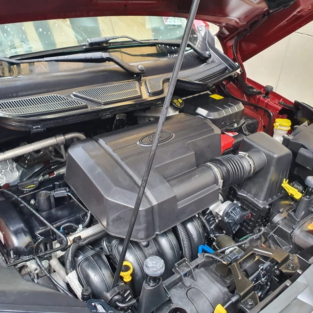
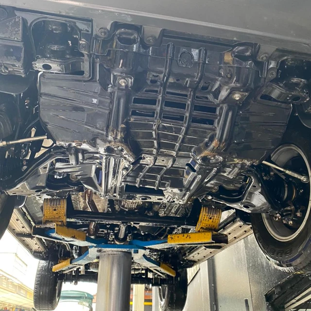
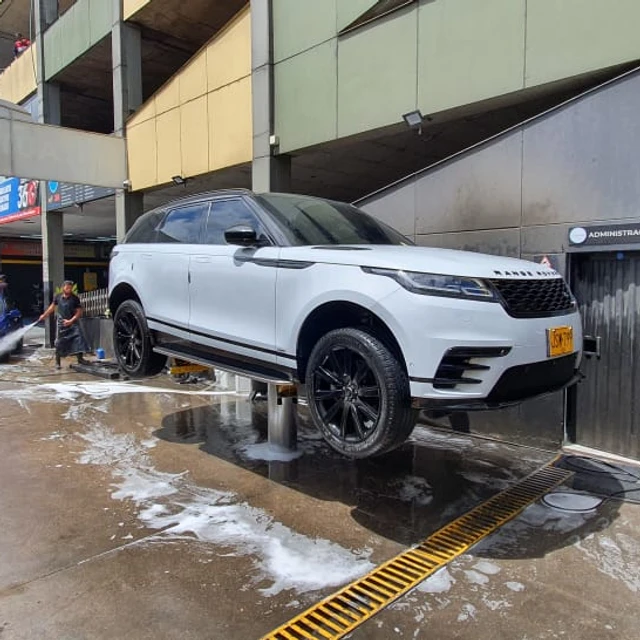

Lavado de Motor
Realizamos un lavado de motor especializado, lo que elimina significativamente cualquier riesgo de afectación en las partes sensibles del motor, tales como computador, alternador, bujías, inyectores, entre otros.
Lavado de Chasis
Para nuestro lavado de chasis, utilizamos gato hidráulico, que permite lavar a presión el chasis del auto en su totalidad. Aplicamos grafito de forma opcional, de acuerdo con las preferencias del cliente.
Lavado de Exteriores
Lavado exterior realizado a presión, con shampoo especial para auto, con PH neutro y espumadora jet-flow. Incluye aspirado profundo. El secado se realiza con microfibra especial, utilizamos productos especiales para los plásticos e hidratación de partes internas.
